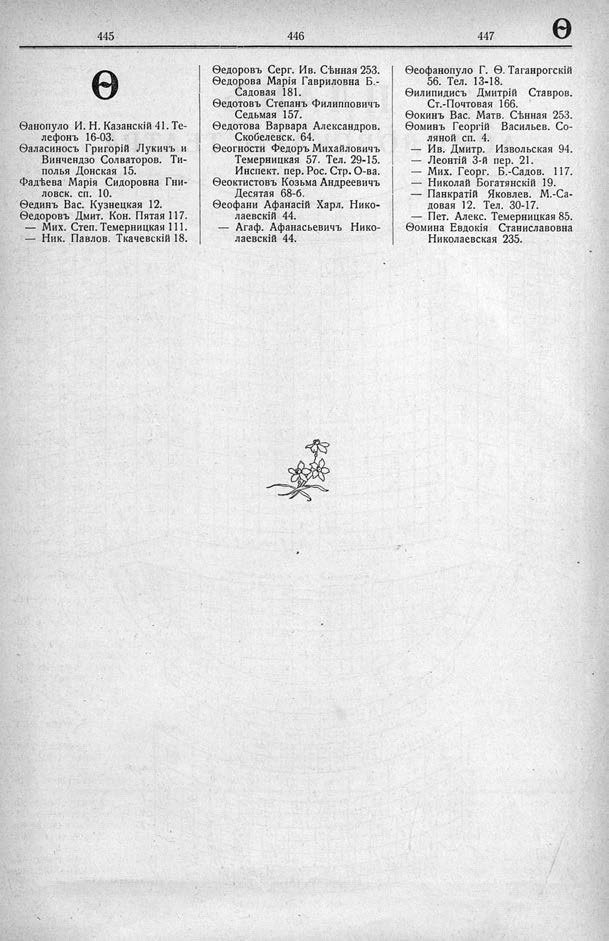

Лист источника 499
Скан

Распознанный текст
445 446 447 Ѳ
Ѳ
Ѳанопуло И. Н. Казанскій 41. Те-
лефонъ 16-03.
Ѳаласиносъ Григорій Лукичъ и
Винчендзо Солваторов. Ти-
полья Донская 15.
Фадѣева Марія Сидоровна Гни-
ловск. сп. 10.
Ѳединъ Вас. Кузнецкая 12.
Ѳедоровъ Дмит. Кон. Пятая 117.
— Мих. Степ. Темерницкая 111.
— Ник. Павлов. Ткачевскій 18.
Ѳедоровъ Серг. Ив. Сѣнная 253.
Ѳедорова Марія Гавриловна Б.-
Садовая 181.
Ѳедотовъ Степанъ Филипповичъ
Седьмая 157.
Ѳедотова Варвара Александров.
Скобелевск. 64.
Ѳеогности Федоръ Михайловичъ
Темерницкая 57. Тел. 29-15.
Инспект. пер. Рос. Стр. О-ва.
Ѳеоктистовъ Козьма Андреевичъ
Десятая 68-б.
Ѳеофани Афанасій Харл. Нико-
лаевскій 44.
— Агаф. Афанасьевичъ Нико-
лаевскій 44.
Ѳеофанопуло Г. Ѳ. Таганрогскій
56. Тел. 13-18.
Ѳилипидисъ Дмитрій Ставров.
Ст.-Почтовая 166.
Ѳокинъ Вас. Матв. Сѣнная 253.
Ѳоминъ Георгій Васильев. Со-
ляной сп. 4.
— Ив. Дмитр. Извольская 94.
— Леонтій 3-й пер. 21.
— Мих. Георг. Б.-Садов. 117.
— Николай Богатянскій 19.
— Панкратій Яковлев. М.-Са-
довая 12. Тел. 30-17.
— Пет. Алекс. Темерницкая 85.
Ѳомина Евдокія Станиславовна
Николаевская 235.